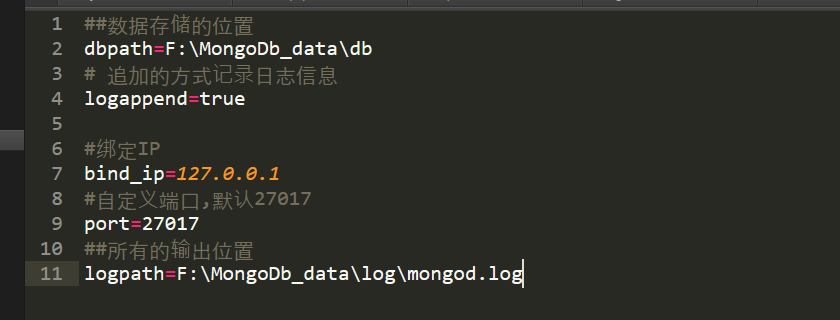
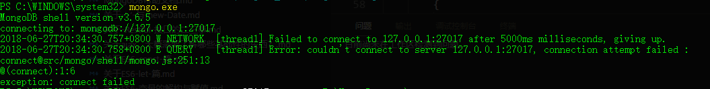
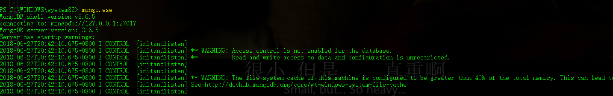
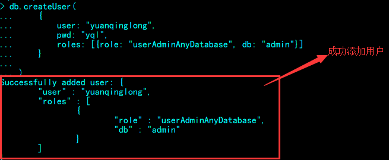
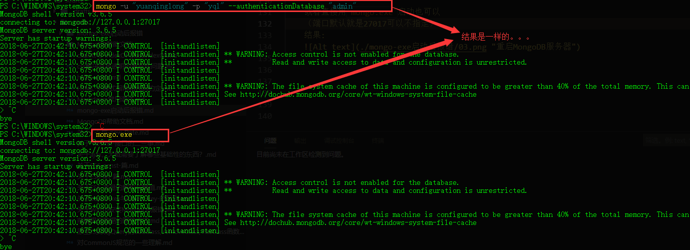

MongoDB的使用报错信息
1 | Server has startup warnings: |
解决方案
sorry,我也不知道怎么回事，最后我决定重新建立数据库，下面是步骤：
（MongoDB下载完成之后最好是配个环境变量，所以我是随便打开了一个cmd，或者powershell就可以运行mongod.exe/mongo.exe）
方案:
准备工作
- 首先，我们要在我们指定的路径新建数据库，如：
F:\MongoDb_data\db - 其次，新建一个保存日志的文件夹,如：
F:\MongoDb_data\log - 继而，再建一个配置文件，
mongo.config
内容如图：

- 首先，我们要在我们指定的路径新建数据库，如：
执行配置文件，命令：
mongod --config "F:\MongoDb_data\mongod.config" --install,我们能够看到log下生成了日志文件这一步不要去执行exe文件，如果这样的或或得到这样的报错信息
原因很简单，因为我们的mongodb服务尚未启动，所以，运行命令
net start mongo,即，开启MongoDB服务（net stop mongo关闭服务）
然后再次执行 mongo.exe
得到如下结果：
- 然后我们可一查看数据库,
show dbs， - 可以随便选择一个 ,比如，admin 数据库，命令
use admin 添加一个用户，这里有些需要注意的地方：
1) 首先我们需要了解的,创建用户的语句：1
db.createUser(user, writeConcern)
- user 这个文档创建关于用户的身份认证和访问信息；
writeConcern 这个文档描述保证MongoDB提供写操作的成功报告。
2) 接下来细说 user:
1
2
3
4
5
6
7
8{
user: "<name>", //用户名
pwd: "<cleartext password>", //密码
customData: { <any information> }, //关于此用户的描述
roles: [
{ role: "<role>", db: "<database>" } | "<role>", //role:角色 db:指定数据库
]
}user文档字段介绍：
user字段，为新用户的名字；
pwd字段，用户的密码；
cusomData字段，为任意内容，例如可以为用户全名介绍；
roles字段，指定用户的角色，可以用一个空数组给新用户设定空角色；
在roles字段,可以指定内置角色和用户定义的角色。Built-In Roles（内置角色）：
- 数据库用户角色：read、readWrite;
- 数据库管理角色：dbAdmin、dbOwner、userAdmin；
- 集群管理角色：clusterAdmin、clusterManager、clusterMonitor、hostManager；
- 备份恢复角色：backup、restore；
- 所有数据库角色：readAnyDatabase、readWriteAnyDatabase、userAdminAnyDatabase、dbAdminAnyDatabase
- 超级用户角色：root
// 这里还有几个角色间接或直接提供了系统超级用户的访问（dbOwner 、userAdmin、userAdminAnyDatabase） 内部角色：__system
PS：关于每个角色所拥有的操作权限可以点击上面的内置角色链接查看详情。· writeConcern文档（官方
w选项：允许的值分别是 1、0、大于1的值、”majority”、；
j选项：确保mongod实例写数据到磁盘上的journal（日志），这可以确保mongd以外关闭不会丢失数据。设置true启用。
wtimeout：指定一个时间限制,以毫秒为单位。wtimeout只适用于w值大于1。
1) 完整执行步骤
1
2use '<database>' //选择指定的数据库
db.createUser(user)
以名为
admin的数据库为例，在mongo.exe中执行如下:
1) 创建管理员1
use admin
2) 创建管理员
1
2
3
4
5
6
7db.createUser(
{
user: "yuanqinglong",
pwd: "yql",
roles: [{role: "userAdminAnyDatabase", db: "admin"}]
}
)
3) 以用户身份登录
1
mongo --port 27017 -u "yuanqinglong" -p "yql" --authenticationDatabase "admin"
或者直接用
mongo.exe启动也可以
（端口默认就是27017可以不指定）
结果:

ok！！！